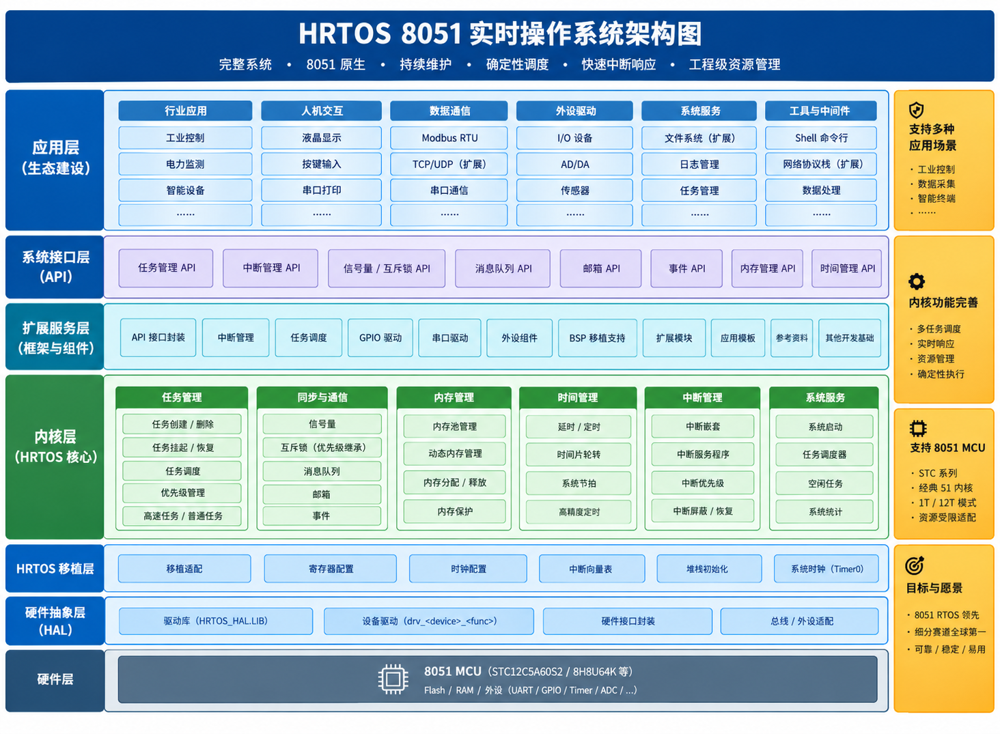

职责边界
区分调度决策、上下文切换、中断处理和资源管理。 它们可能在运行过程中相互关联，但并不是同一个概念。
本章节从系统结构出发，梳理 HRTOS 的内核组织、任务调度、中断处理、 内存管理与任务间通信。各模块页面分别说明其职责、关键机制与相互关系， 为理解系统行为和分析实时性能提供结构化入口。
通过整体视图了解应用、系统软件与硬件之间的关系。 各层的具体边界应以 HRTOS 实际实现和对应模块文档为准。

从五个相互关联的技术方向进入具体文档。每个模块解决的问题不同， 但它们共同影响系统的运行行为。
了解内核的组织方式、系统执行流程与系统边界， 区分内核控制逻辑和具体功能模块的职责。
查看内核文档了解任务状态与调度决策，进一步阅读优先级模型、 调度策略及相关理论。
查看调度文档了解中断模型、响应路径、嵌套处理及中断延迟， 分析外部事件如何影响系统运行。
查看中断文档了解内存布局、内存模型与资源竞争， 关注有限存储空间下的资源使用与管理。
查看内存文档了解任务之间的数据交换与协作机制， 并结合通信流程理解相关模块的交互关系。
查看通信文档阅读实时操作系统架构时，需要关注的不只是模块名称， 更重要的是各模块如何共同决定系统行为。
区分调度决策、上下文切换、中断处理和资源管理。 它们可能在运行过程中相互关联，但并不是同一个概念。
结合系统流程、中断入口和任务切换文档， 理解事件发生后系统可能经历的关键阶段。
关注 8051 平台上的存储空间、任务栈与共享资源约束， 理解这些限制如何影响系统设计。
将响应延迟、调度行为与最坏情况分析联系起来。 性能结论应结合目标芯片、编译配置和实际测量结果。
系统行为通常由多个机制共同完成。下面列出适合阅读时重点追踪的关系， 而不是将它们简化成固定的单向调用链。
中断处理与任务运行之间存在交互。理解具体行为时， 应进一步区分中断响应、中断退出、调度请求与实际任务切换。
调度器决定后续应运行的任务，而上下文切换涉及处理器执行状态的保存与恢复。 两者相互关联，但职责不同。
任务间通信可能与等待和唤醒机制发生关联。 具体的阻塞条件、超时行为和恢复路径，应以对应实现及 API 文档为准。
任务执行和中断处理都受到目标平台存储资源的约束。 应结合实际内存布局、栈使用情况与编译结果进行分析。
如果你希望从整体认识逐步深入到运行机制，可以按下面的路径阅读。 已经熟悉某个模块时，也可以直接进入对应专题。